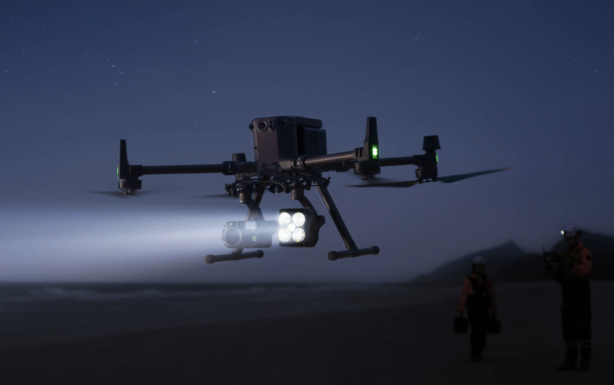

Warmtebeelden vanuit de lucht voor het detecteren van energieverlies en defecten.
Warmteverlies, defecte zonnepanelen of verborgen vochtproblemen? Met onze thermische drone-oplossingen kijken we dwars door de oppervlakte heen. Thermografie stelt ons in staat om temperatuurverschillen nauwkeurig in kaart te brengen, wat essentieel is voor energie-audits en preventief onderhoud.
Daarnaast zijn wij gecertificeerd voor nachtvluchten. Dit is cruciaal voor beveiligingsopdrachten of het opsporen van wild, waarbij de temperatuurverschillen na zonsondergang het meest duidelijk zijn. Wij brengen de onzichtbare wereld helder in beeld, dag en nacht.
Heeft u een vraagstuk waarbij temperatuur of nachtzicht het verschil maakt? Laten we de mogelijkheden bespreken.
WhatsApp: +32 476 17 09 07
Mail: sales@nexsocom.com